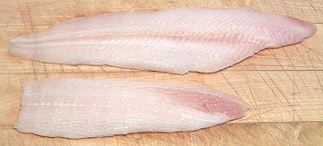
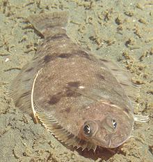

You do not want to buy this fish. This right eyed flounder is not anything like the Dover Sole or Common Sole (Solea solea) of Europe. This one's real name is "Slime Fish", and it's mainly processed into mink food. It is, however, also sometimes passed off to unsuspecting consumers as "Dover Sole", or even worse, under some other name. It is edible, though insipid, but used in recipes intended for real Dover Sole (Fishbase "Common Sole") it is an unmitigated disaster. It turns into slimy mush.
Slime Fish infests coastal regions from southern Japan all the way around to just south of San Diego, California. This fish can grow to about 30 inches long and 7.6 pounds, but the photo specimen was 17-3/4 inches long and weighed 2 pounds 1 ounce.
Solea solea, which is a true sole, not a flounder, is not found outside European and North African waters, so it tends to be rather expensive around here, if you can find it at all. When a recipe calls for "Dover Sole", Petrale Sole (actually a flounder) will do fine, but not Pacificus. Use caution, I have seen Dover Sole labeled as Petrale Sole (hint, Petrale is white on the blind side).
More on the Flounder Family.
Some may feel the notes below are exaggerated. If you think they are, go out and buy one of these fish for yourself and learn better - but keep in mind I warned you not to.
Identifying: I have seen this fish sold under various false names, even Petrale Sole, a far more worthy fish. Fortunately, this fish can be easily recognized. First, it's dark on both sides, the blind side being just a little lighter and more gray. Note that the lateral line is quite straight, arching up just a little over the pectoral fin. The eyes are very bulgy, and the mouth very small. On both the upper and lower jaw, the small, closely packed teeth are developed only on the blind side. there are often very small reddish spots scattered here and there on the eye side.
If you buy a whole fish, the first thing you will notice is that it is very slippery, very limp, and feels like a bag full of Jello. It gets worse from here. Aside from the jelly-like texture of the flesh, it has almost no detectable flavor. Fried in a light oil with just a dusting of rice flour, flour and oil will be the only flavors you will detect. But there are other problems before you get to taste it.
Cooking: You can use only quick, dry heat cooking methods such as pan frying, broiling or grilling (wrapped in foil). Most notes specify grilling on the bone for best flavor and edibility, but I'm pretty sure it needs to be wrapped in foil or you'll have only bones on the grill in short order.
Do Not use this fish for recipes found in cookbooks or on the Internet - those are for real Dover Sole - this fish will just turn to mush - as many have found to their distress. The only way to save dinner then is a call to the pizza guy.
For pan frying, you will need at least a pretty good powdering of rice flour to keep fillets from sticking to the pan - and to hold them together - they will not hold together on their own.
Wet cooking is pretty much out of the question, but, as an experiment, I poached a couple of fillets. They shrank a lot, a whole lot, and were so small I was able to lift them out intact. Eating them was another matter, the fillets fell apart into tiny flakes at a touch.
 Buying: This fish is most commonly found as fillets in supermarkets and fish counters - and, if you really want this fish, that's the way to buy it - or suffer the consequences. The photo specimen fillets were purchased frozen from Trader Joe's at 2011 US $4.99 / pound. To their credit, TJs recommends pan frying and provides cooking instructions only for quick dry heat methods. The largest of the fillets in the photo to the left was 9-3/4 inches long and very thin at 2-3/8. ounces. These fillets are very tender and tend to be already breaking up in the package. They also exude a huge amount of water, so if you buy a pound, figure on cooking a lot less than that.
The whole fish in the photo at the top of the page was purchased from a Philippine market in Los Angeles, California, but this fish is rarely seen even there. I have seen it sold as "Dover Sole" for 2014 US $2.49 / pound, and mislabeled as "Petrale Sole" for 2014 US $2.99 / pound - a rip-off even at the lower price. I had no choice, I needed fish for a photo and first hand analysis, but be warned.
Scales: This fish is completely covered with very tiny scales which are not easy to scrape off the usual way. You have to use the sharp edge of you prep knife to shave them off, and they scrape off as a stiff gray sludge. You can't see where they have been removed, so just keep on scraping until you don't get any more of the sludge, just slime.
As you scrape, the fish will be oozing an impressive torrent of slippery slime, until you literally can't hold on to the fish. It will slide all over the place and probably get away from you several times. You will have to wash the slime off your cutting board several times during scaling. I suppose you could simply clean out the guts, wrap the fish in foil, grill or broil it and try peeling the skin off after cooking, scales, slime and all. Not very appetizing, though.
Cleaning: The main problem cleaning this fish is that it's almost too slippery to hold and too limp to control. You can make a cut in the belly on the blind side just above the fin and behind the head to pull out the innards. A better method, if you don't need the head on, is to cut off the head. Use kitchen shears from the top through the backbone, and make a cut on each side behind the pectoral and pelvic fins (the little tiny ones under the head). Pull the head off straight forward and most of the guts will come out with it. The body cavity runs almost the full length of the fish, and is pretty ugly too, very messy. There's a long hunk of pink guts on both sides of the fin rays that won't pull out. If you're going to cook the fish "on the bone", best to use your kitchen shears and just cut off the bottom fin high enough so you can get them out. If you are filleting the fish, they will be exposed and you can just peel them off.
Filleting: Again, the main problem is the fish is too limp and slippery to control, and will continue to ooze slime - but Follow our method for Petrale Sole, filleting from the backbone out to the edges, as best you can. The backbone is at the top edge of the lateral line. Feel the limp slippery fillets for bones and fin rays, and just scrape off the ones you find. That's easy because the flesh is so soft.
Skin: The skin does not have a bitter, oily or "off" flavor, but has considerable shrink when it hits hot water or oil. The flesh has no dimensional integrity so the skin just curls it up into a roll. The only way to control this in a frying pan is to coat the fillets with a dusting of rice flour or similar, and fry it skin side up until the other side browns and stiffens the fillet. It'll still be pulled out of shape a lot when you turn it over, but won't curl up. Cooked, the skin is, as you might expect, thick and mushy - it is wet and does not brown easily. The skin can be removed by the usual cutting board and long knife Method, but slipperiness is yet again a problem - and use care. If you break through the skin, try starting over from the front end.
Yield: A 2 pound 1-5/8 ounce fish yielded 1 pound 1 ounce of skin-on fillet (52%) and 10-1/2 ounces skin-off (31%). The yield goes down so much because the skin is fairly heavy, it's almost impossible to get it off cleanly, and you lose all the thinner flesh out by the fin margins. Smaller fish will yield a slightly smaller percentage.
Soup Stock: Surely you jest. "Anyone for a nice bowl of slime soup?" No, I didn't try it - there are some things I'm just not fool enough to try - not many, but there are some.
 This fish is laughing at you.
Photo by U.S. National
Oceans and Atmospheric Administration = public domain.